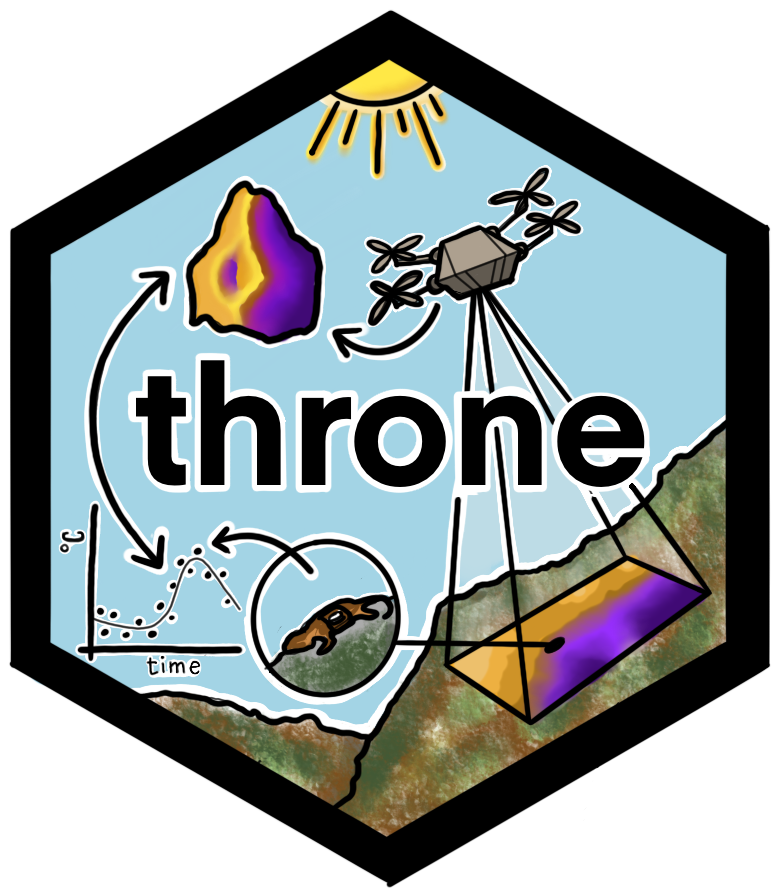

throne: Using aerial thermography to map terrestrial thermal environments in unprecedented detail 
Accurately quantifying and mapping thermal environments is crucial to predict how environmental change is going to impact organisms. However, describing thermal environments is challenging because 1) there is a mismatch between the resolution of available data and the scale at which organisms experience thermal variation, and 2) available tools can pose a challenge for inexperienced users. Here, we present the throne package, which provides tools to combine spatially discrete but temporally complete measurements from temperature loggers with spatially complete but temporally discrete thermal maps obtained via IR drone photogrammetry to produce spatio-temporally complete thermal landscapes.
Getting started
The package is currently under development and not yet available on CRAN, but it can be dowloaded directly from GitHub via:
devtools::install_github("ggcostoya/throne")For an overview of how the throne works please visit this page
How to cite the package
This package accompanies a manuscript that is currently under review in Methods in Ecology & Evolution.
If you use throne in your research, please cite the package as:
Alujević K, Garcia-Costoya G, Ratia N, Schmitz E, Godkin R, Bujan J, Gopal A, Logan M (2024). throne: Predicting thermal landscapes in spatio-temporally unprecedented detail. R package version 1.0, https://ggcostoya.github.io/throne/.